Horizontes
38 piezas nuevas para Balatro Portrait 1.1. Arte original generado con la herramienta integrada imagegen y exportado a los atlas definitivos 1x y 2x mediante recorte y escalado nearest-neighbour. Fuentes originales y prompts conservados en el proyecto.
Efectos, misiones y auditoría
Challenges
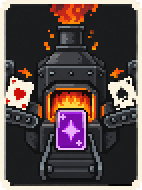
Alto hornoCH01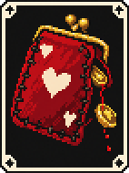
Deuda de sangreCH02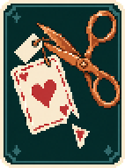
Pago en especieCH03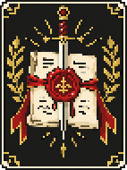
JuramentoCH04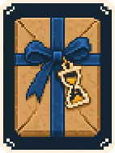
Por encargoCH05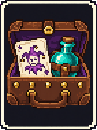
Equipaje de manoCH06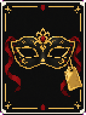
A ciegasCH07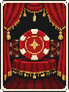
Ensayo generalCH08Boss Blinds
La EscobaBS01El PeineBS02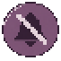
La SordinaBS03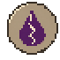
La LacaBS04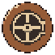
La Caja FuerteBS05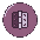
La BisagraBS06 Vouchers
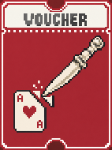
AbrecartasVX01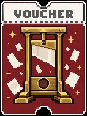
GuillotinaVX02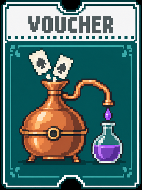
AlambiqueVX03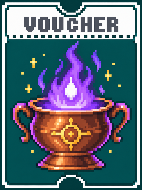
CrisolVX04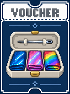
CostureroVX05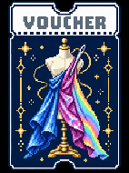
Alta costuraVX06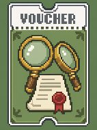
Segunda opiniónVX07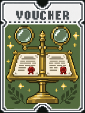
LicitaciónVX08Tags
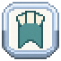
MarcadorTX01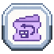
Billete de vueltaTX02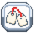
Etiqueta cambiadaTX03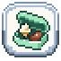
DespensaTX04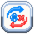
VuelcoTX05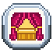
IntermedioTX06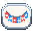
ComitivaTX07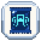
RadiografíaTX08Booster Packs
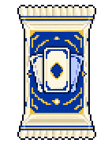
MontajePX01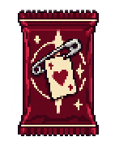
PrendaPX02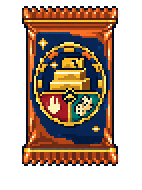
EscaladaPX03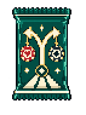
Hoja de rutaPX04Decks
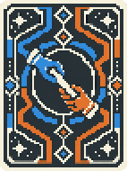
Baraja de RelevoDK01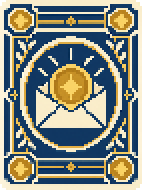
Baraja de DietasDK02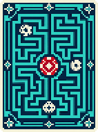
Baraja LaberintoDK03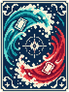
Baraja de MareasDK04Prompts y fuentes
Assets del juego: MODS/Horizons/assets. Fuentes: balatron/assets/horizons.